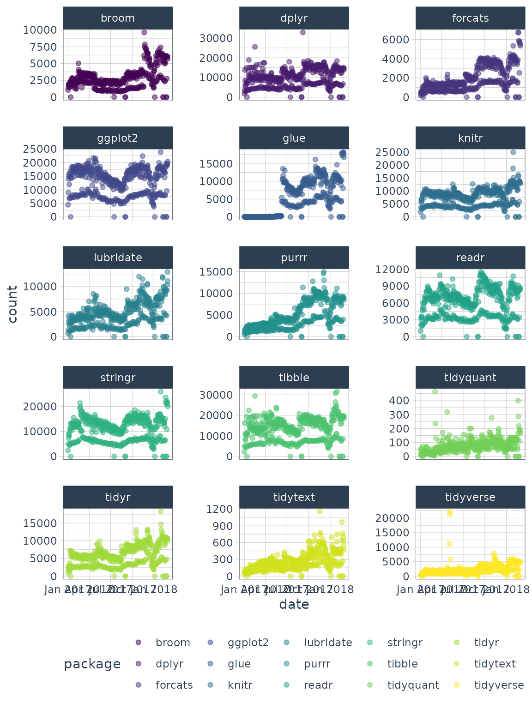

vignettes/forecasting_with_cleaned_anomalies.Rmd
forecasting_with_cleaned_anomalies.RmdForecasting error can often be reduced 20% to 50% by repairing anomolous data
We can often get better forecast performance by cleaning anomalous
data prior to forecasting. This is the perfect use case for integrating
the clean_anomalies() function into your
forecast workflow.
library(tidyverse)
library(tidyquant)
library(anomalize)
library(timetk)
# NOTE: timetk now has anomaly detection built in, which
# will get the new functionality going forward.
# Use this script to prevent overwriting legacy anomalize:
anomalize <- anomalize::anomalize
plot_anomalies <- anomalize::plot_anomaliesHere is a short example with the
tidyverse_cran_downloads dataset that comes with
anomalize. We’ll see how we can reduce the forecast
error by 32% simply by repairing anomalies.
tidyverse_cran_downloads
#> # A tibble: 6,375 × 3
#> # Groups: package [15]
#> date count package
#> <date> <dbl> <chr>
#> 1 2017-01-01 873 tidyr
#> 2 2017-01-02 1840 tidyr
#> 3 2017-01-03 2495 tidyr
#> 4 2017-01-04 2906 tidyr
#> 5 2017-01-05 2847 tidyr
#> 6 2017-01-06 2756 tidyr
#> 7 2017-01-07 1439 tidyr
#> 8 2017-01-08 1556 tidyr
#> 9 2017-01-09 3678 tidyr
#> 10 2017-01-10 7086 tidyr
#> # ℹ 6,365 more rowsLet’s take one package with some extreme events. We can hone in on
lubridate, which has some outliers that we can fix.
tidyverse_cran_downloads %>%
ggplot(aes(date, count, color = package)) +
geom_point(alpha = 0.5) +
facet_wrap(~ package, ncol = 3, scales = "free_y") +
scale_color_viridis_d() +
theme_tq() 
Let’s focus on downloads of the lubridate R package.
First, we’ll make a function, forecast_mae(), that can
take the input of both cleaned and uncleaned anomalies and calculate
forecast error of future uncleaned anomalies.
The modeling function uses the following criteria:
data into training and testing data that
maintains the correct time-series sequence using the prop
argument.col_train
argument.col_test argument.
forecast_mae <- function(data, col_train, col_test, prop = 0.8) {
predict_expr <- enquo(col_train)
actual_expr <- enquo(col_test)
idx_train <- 1:(floor(prop * nrow(data)))
train_tbl <- data %>% filter(row_number() %in% idx_train)
test_tbl <- data %>% filter(!row_number() %in% idx_train)
# Model using training data (training)
model_formula <- as.formula(paste0(quo_name(predict_expr), " ~ index.num + year + quarter + month.lbl + day + wday.lbl"))
model_glm <- train_tbl %>%
tk_augment_timeseries_signature() %>%
glm(model_formula, data = .)
# Make Prediction
suppressWarnings({
# Suppress rank-deficit warning
prediction <- predict(model_glm, newdata = test_tbl %>% tk_augment_timeseries_signature())
actual <- test_tbl %>% pull(!! actual_expr)
})
# Calculate MAE
mae <- mean(abs(prediction - actual))
return(mae)
}We will use the anomalize workflow of decomposing
(time_decompose()) and identifying anomalies
(anomalize()). We use the function,
clean_anomalies(), to add new column called
“observed_cleaned” that is repaired by replacing all anomalies with the
trend + seasonal components from the decompose operation. We
can now experiment to see the improvment in forecasting performance by
comparing a forecast made with “observed” versus “observed_cleaned”
lubridate_anomalized_tbl <- lubridate_tbl %>%
time_decompose(count) %>%
anomalize(remainder) %>%
# Function to clean & repair anomalous data
clean_anomalies()
#> Converting from tbl_df to tbl_time.
#> Auto-index message: index = date
#> frequency = 7 days
#> trend = 91 days
lubridate_anomalized_tbl
#> # A time tibble: 425 × 9
#> # Index: date
#> date observed season trend remainder remainder_l1 remainder_l2 anomaly
#> <date> <dbl> <dbl> <dbl> <dbl> <dbl> <dbl> <chr>
#> 1 2017-01-01 643 -2078. 2474. 246. -3323. 3310. No
#> 2 2017-01-02 1350 518. 2491. -1659. -3323. 3310. No
#> 3 2017-01-03 2940 1117. 2508. -685. -3323. 3310. No
#> 4 2017-01-04 4269 1220. 2524. 525. -3323. 3310. No
#> 5 2017-01-05 3724 865. 2541. 318. -3323. 3310. No
#> 6 2017-01-06 2326 356. 2558. -588. -3323. 3310. No
#> 7 2017-01-07 1107 -1998. 2574. 531. -3323. 3310. No
#> 8 2017-01-08 1058 -2078. 2591. 545. -3323. 3310. No
#> 9 2017-01-09 2494 518. 2608. -632. -3323. 3310. No
#> 10 2017-01-10 3237 1117. 2624. -504. -3323. 3310. No
#> # ℹ 415 more rows
#> # ℹ 1 more variable: observed_cleaned <dbl>
lubridate_anomalized_tbl %>%
forecast_mae(col_train = observed, col_test = observed, prop = 0.8)
#> tk_augment_timeseries_signature(): Using the following .date_var variable: date
#> tk_augment_timeseries_signature(): Using the following .date_var variable: date
#> [1] 4054.053
lubridate_anomalized_tbl %>%
forecast_mae(col_train = observed_cleaned, col_test = observed, prop = 0.8)
#> tk_augment_timeseries_signature(): Using the following .date_var variable: date
#> tk_augment_timeseries_signature(): Using the following .date_var variable: date
#> [1] 2755.297This is approximately a 32% reduction in forecast error as measure by Mean Absolute Error (MAE).
(2755 - 4054) / 4054
#> [1] -0.3204243Business Science offers two 1-hour courses on Anomaly Detection:
Learning
Lab 18 - Time Series Anomaly Detection with
anomalize
Learning
Lab 17 - Anomaly Detection with H2O Machine
Learning